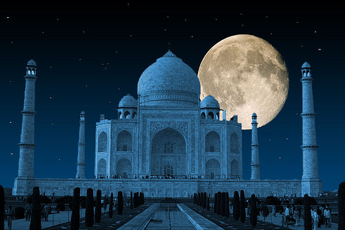
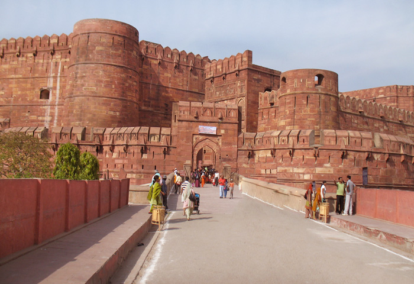
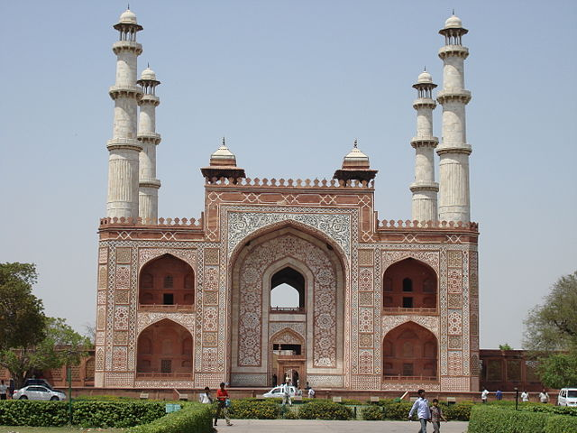
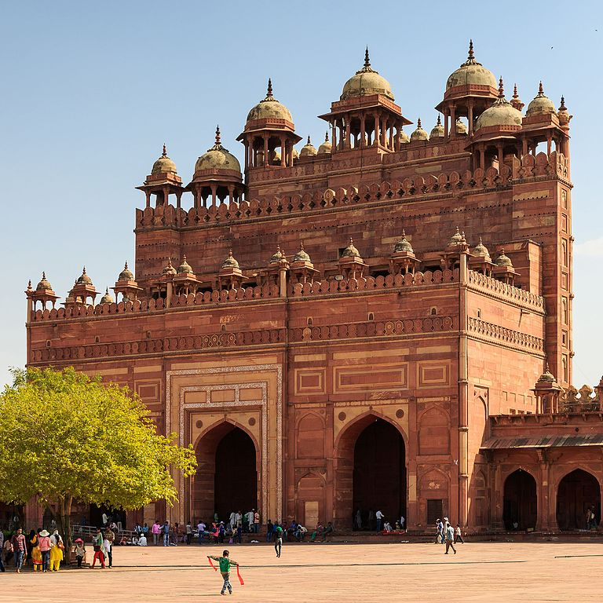

The Taj stands tall and regal on a raised, square platform, forming an unequal octagon with its four truncated corners. The architecture uses the interlocking arabesque concept, where each element is singular in its entirety, but integrates seamlessly with the whole. The central dome spans 58 feet in diameter and soars to a height of 213 feet. It is flanked on four sides by smaller domed chambers,

Astonishing facts about the Taj Mahal
Symbol of true love and one of the Seven Wonders of the World, the Taj Mahal is amongst country's most visited tourist attractions. Displaying a beautiful mix of Islamic, Persian and Indian architecture, this historic marvel was built in over 22 years, with the help of about 20000 workers. Despite its popularity, there are several facts people still do not know about the Taj Mahal. Listed below are some of the points that'd surely enhance your knowledge about this marble mausoleum:
1. You won't believe but the replicas of the Taj Mahal do exist.
Nearby Tourist Attractions
Taj Mahal marks the identity of the city of Agra; however there are many splendid places that exist in Agra that remains unveiled. Most of the grandeurs are found around Taj Mahal and narrate the galore of the Mughal era. Agra is a reflection of majestic Mughal era and their astounding history is a vital part of the Golden Triangle in India. Visitors throng Agra to witness the unmatched aura of Taj Mahal. Often the beauty of Taj Mahal overshadows other structures including Agra fort, Fatehpur Sikri and Sikandra existing under the shelter. Without offending the magnanimous entity of Taj Mahal, a travel enthusiast has the right to explore cores of the wonder called Agra city. Here is a list of places to visit in Agra near Taj Mahal that you must follow as an authentic traveler:
Agra Fort
Sikandra
Fatehpur
Nearby Hotels in Agra
1 HOTEL TAJ RESORTS HOTELS, AGRA ADDRESS:Plot No. 538, Near Shilp Gram, Estern Gate, Agra 282001

2 TAJ HAVELI HOTELS, AGRA ADDRESS:6, Amarlok, Taj Link Road, Near Shilp gram Parking, Agra, 282001

3 THE OBEROI AMARVILAS HOTELS, AGRA ADDRESS:Paktola, Tajganj, Basai, Taj East Gate Road, delhi

4 HOTEL AMAR HOTELS, AGRA ADDRESS:Tourist Complex Area, Fatehabad Road, Agra 282001

Go TO Top
Go To Previous Page